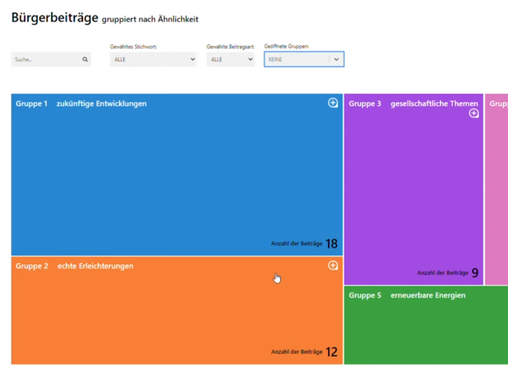

PADEMOS — Multi-Perspective Visualisation for Participatory Agenda Setting
Innovative methods and tools for citizen participation in scientific agenda setting — empowering citizens to formulate questions for science and enabling multi-perspective knowledge visualisation.
Scientific agenda setting has traditionally taken place without active citizen participation. As part of preparations for the German Science Year 2022, the PADEMOS project developed and tested innovative methods and tools for citizen participation in scientific agenda setting, funded by the German Federal Ministry of Education and Research (BMBF).
Research Questions
The project addressed two central research questions:
- Citizen Empowerment: How can citizens from different social realities be enabled to formulate their questions and problems in a way that scientists and funding policy experts can use as relevant input in the development of research topics?
- Knowledge Visualisation: How can a visualisation method be developed that supports the utilisation and feedback of collected citizen questions, enabling contributions from different actors with different levels of knowledge, interests, and contexts to be mutually usable and related to each other?
Approach
Different digital formats and methods for generating citizen inputs for science were developed and tested using the topic “Artificial Intelligence (AI) for People” as an example:
- Chatbot for Citizen Input: A chatbot was developed that guided and supported citizens in generating and describing their contributions. It helped them describe why their named problem or idea is relevant, which societal groups are affected, and what consequences for society and the environment could arise if the problem or idea were researched or realised by science.
- Participatory Digital Workshops: The developed formats were tested in participatory digital citizen workshops with participants from different age groups (from students to seniors) and scientists from fields such as machine learning, human-computer interaction, and philosophy.
- Intelligent Text Analysis: Citizen contributions were grouped by thematic similarities using intelligent text analysis methods and visualised as an interactive digital knowledge map.
Solution: Interactive Knowledge Map
The centrepiece of the project is an interactive digital knowledge map that connects citizen and scientific perspectives:
- For Scientists & Policy: The knowledge map enables scientists and funding policy makers to gain new insights from collected contributions, respond directly to citizen submissions by answering questions or referencing existing research results.
- Connecting Perspectives: Scientists can create connections to current research topics, illustrating the current state of research in relation to citizen submissions, or propose new research topics.
- Open Access: The resulting knowledge map connects citizen and scientific perspectives and provides easy access to the results of the participatory process for other citizens, scientists, journalists, and funding policy makers.
Results & Impact
The experimental testing in participatory digital citizen workshops demonstrated that the developed formats were effective in helping citizens to present their questions, problems, and future visions in a structured manner that is comprehensible for scientists.
Outcomes
- Recommendations: Insights from the PADEMOS project were developed into recommendations for the future design of participatory initiatives aimed at strengthening citizen participation in scientific agenda setting.
- Open Tools: Both the chatbot and excerpts from the knowledge map are accessible via the EIPCM website, and the institute offers these digital innovations and participatory formats to interested organisations and institutions.
- Bridging the Gap: The project demonstrated how digital participation formats can overcome barriers to participation and communication between citizens and the scientific community.
Learnings
- Guided Participation Works: A chatbot-guided approach helped citizens from diverse backgrounds articulate their questions and concerns in a structured way that scientists could engage with meaningfully.
- Multi-Perspective Visualisation: Combining citizen contributions with scientific responses in an interactive knowledge map created a transparent and accessible record of the participatory process.
- Broad Inclusion: The digital formats successfully engaged participants across all age groups, from students to seniors, demonstrating the scalability of the approach.